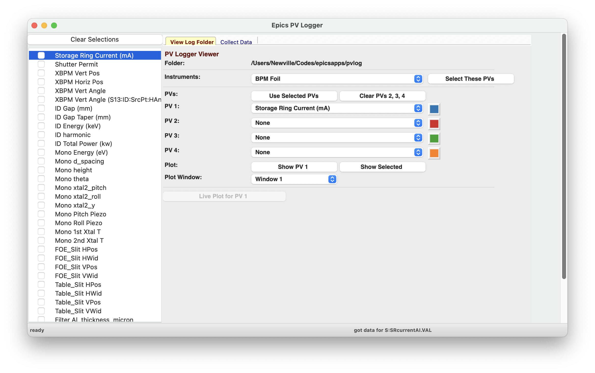
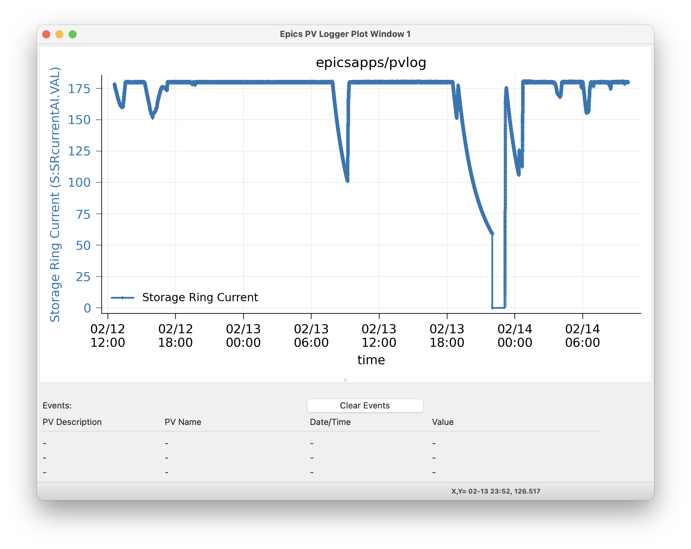
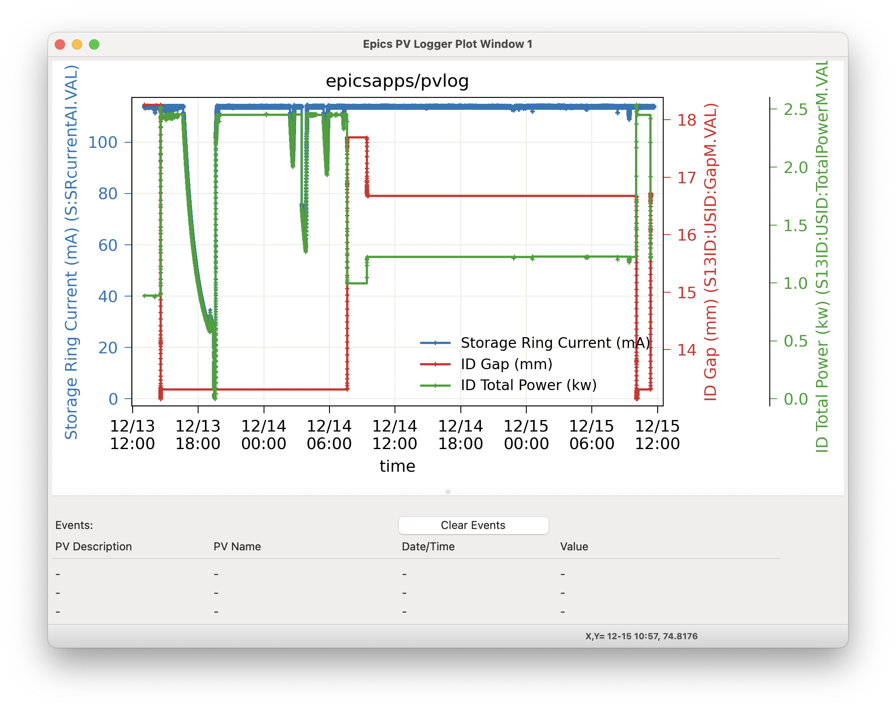
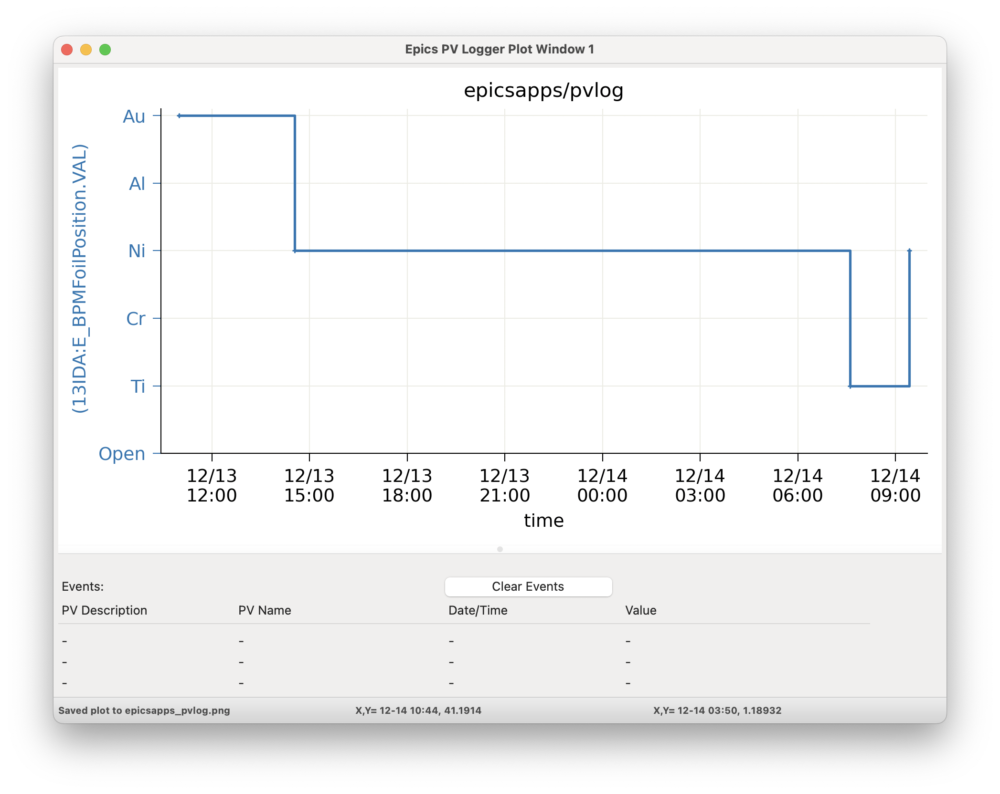
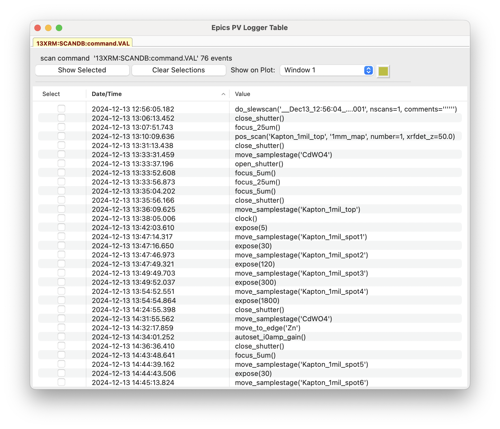
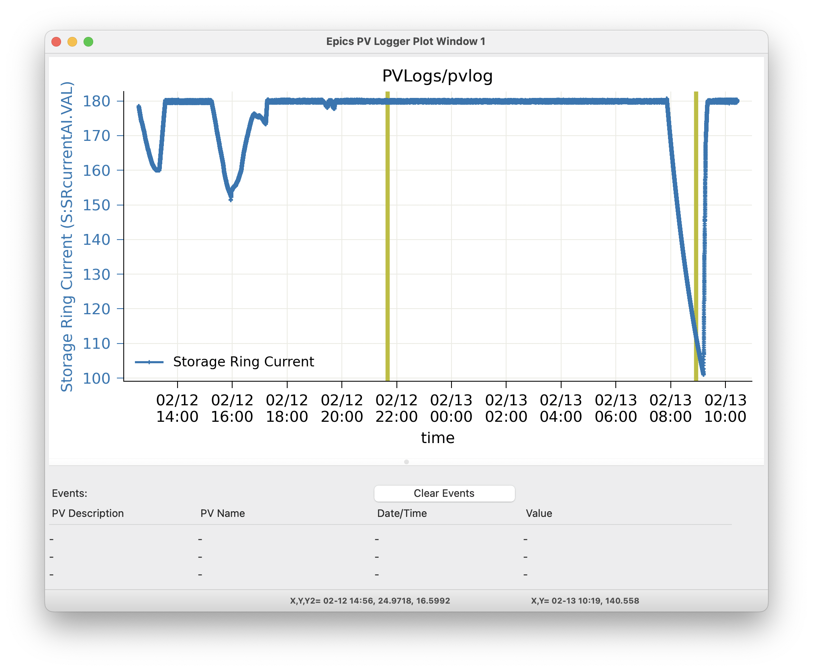

PV Logger¶
The Epics PV Logger collects timeseries of a set of PVs into plain text data files in a folder, and displays these data back for exploratory analysis. This is intended for a modest number of PVs that are not the primary data being collected during an experiment, for a limited time. The typical use-case could be expressed as “around 100 PVs for a week”, which is typical for a single experiment at a synchrotron beamline.
For such experiments, it is often useful to collect values like Storage Ring Current, room temperature, positions and temperature of beamline optics and components, and detector settings from existing Epics PVs. This sort of metadata cold be put into every data fil. While some metadata surely belongs in each data file, items like temperature of an upstream mirror or values of beam position monitors are really not metadata about the individual data file. And, while there are several larger systems for archiving and retrieving PV variables for the whole facility or beamline, these are often meant to be facility-wide systems, and not about individual experiments. Such systems may not be easily available after the experiment or away from the beamline.
We found that metadata stored in data file headers or large databases oten makes it hard to investigate how values changed over the course of an experiment. Sometimes, it would be nice to browse and compare a few Time Series plots for a handful of PVs and to compare those with timestamps of the primary data files.
The PVLogger application aims to fill this gap and is designed to collect the meta-data for a particular experiment in a way that can be easily digested and investigated during and after the experiment has ended. Another way of looking at it is that it expands the Strip Chart Display application to collect and view many PVs and preserve and organize the data for future use.
The PVLogger application has two mode of operation: collecting data and viewing data. A command-line program run at the beamline will collect the data into a dedicated folder using a simple configuration file to control what data is collected.
The PVLogger GUI Application can read the data collected into such a folder and allow visualization of the logged data. While at the beamline, The PVLogger application can also be used to launch a Strip Chart Display application to plot a live view of the changing data. Finally, the PVLogger application can be used to read, modify, and save existing configuration files, listing which PVs to log, and can start the data collection process.
If date and times seem to shown with the wrong timezone, see A note on Time Zones.
Viewing PVLogger Data¶
For data that has already been collected, the PVLogger GUI Application can read the data collected into the PVLOG folder, and display it. With Desktop Shortcuts installed (see Creating Desktop Shortcuts), this application can be launched from the PVLogger shortcut with the icon of logs in the Epics Apps folder, or from the command line with:
epicsapps pvlogview
Opening an existing folder will give a main window display like:
The Left-hand column will show the list of of PVs that were logged into the folder. The names shown will generally be the “description” saved for the PV, sometimes with the PV name if the description is not unique. Each has a Check Box that you can use to select many PVs at once. The “Clear Selections” button in the upper left will clear all checked PVs. The right-hand portion has 2 Notebook Tabs, labelled “View Log Folder” and “Collect Data” – we’ll discuss the “View Log Folder” tab here and the “Collect Data” tab in the next section.
The “View Log Folder” Panel allows you to select what edata to visualize. The folder being read is If Epics Instruments were used in the data collection, you can select these and then press “Select these PVs” to check each of the PVs in that Instrument.
The central portion of the panel shows up to 4 PVs to be displayed. Each of these has a Dropdown list will all the PV descriptions. Selecting any PV in the left-hand PV list will select that for “PV 1”. Clicking the “Use Selected PVs” button will select the first 4 checked PVs from the PV List. Clicking “Clear PVs 2,3,4” will clear those PVs (that is, select “None).
Below the list of PVs are buttons for what to display. The “Show PV 1” button will display the data for the PV selected as “PV 1” The “Show Selected” will display the data for all (up to 4) selected PVs. For most PVs, the data will be numerical, and the “Show” buttons will display a graph of the time dependence of the PV(s). Up to 10 Plot windows can be used, and you can select which to use for any display by selecting “Window 1” through “Window 10”.
Below the buttons to plot the logged values, are buttons for “Live Plots”. When used at the beamline or from a computer that can connect to the live beamline PVs, clicking on the “Live Plot for PV 1” will show the corresponding PV in a live Strip Chart Display application.
Finally, below the “Live Plot” section, there are Date and Time entries to view Event Data. We’ll return to this in the next section Event Data: viewing non-numerica data.
As an example plot of one PV, with “Storage Ring Current (mA)” as PV 1, clicking the “Show PV 1” button will show:
selecting 2 PVs to plot together will show a plot like:
For PV data that is in the form of discrete states or enumerated data (often from “multi-bit binary data” Epics records), the plot will show the enumerated strings on the plot labels, as:
For all plots, there is good interactivity including
use Mouse-Down and Drag to Zoom in over a selected region.
Ctrl-Z will Zoom out.
clicking on the plot label in the Legend will toggle whether that trace is displayed.
Ctrl-L will toggle the Legend on and off.
Ctrl-C will copy the image to the system clipboard.
Ctrl-S will save the image to a PNG file.
Ctrl-K will show a more complete configuration window where you can adjust titles and colors.
For more details, see wxmplot.
Event Data: viewing non-numerica data¶
Some data is not numerical but text, and so not easily plotted. To be clear, PVs with enumerated or multi-bit binary values can be plotted, as shown above. For PV values that is changing strings (or long character waveforms) as for file names or recorded commands, PVLogger will show a table of values with timestamps:
Reading the history of values can be useful. Selecting a few of these recorded “Events” and pressing the “Show Selected” Button will put vertical lines (of the selected color) on the plot window at the times of those values, looking like:
Since vertical lines may be shown for many such “Events” and do not otherwise show the data values, clicking on the vertical bar for the time of each event will print the PV description, name, time of event, and value in the table just below the plot. The most recently selected event will be shown at the top, with the previous selected events below that. Clicking the “Clear Events” button on the plot window will clear the table.
For PVs that are Epics Motors several fields besides the main Drive Value (see Data for Epics Motors) will be logged. These other values are not expected to change very often, and so will be displayed are Events for the Motor Drive PV.
In addition to showing showing Events for each PV in a single table so that selected events can be placed on a plot, you can also use the date and time entries at the bottom of the main viewing panel to create a single table showing all events for a set of PVs for a selected time range.
Collecting PVLogger Data¶
For data collection, PVLogger will read a YAML-formatted configuration file to tell it what PVs to collect, and where to save the data. A typical file might look like this:
datadir: '/server/data/beamlineX/2025/userABC'
end_datetime: '2025-03-12 09:00:00'
pvs:
- S:SRcurrentAI.VAL | Storage Ring Current | 0.005
- 'RF-ACIS:FePermit:Sect1To35IdM.VAL | Shutter Permit | 0 '
- SXID:DSID:GapM.VAL | ID Gap (mm) | 0.001
- SXID:DSID:TaperGapM.VAL | ID Gap Taper (mm) | 0.001
- XX:m1.VAL | <auto> | 0.001
- XX:m2.VAL | <auto> | 0.001
- XX:m3.VAL | <auto> | 0.001
- XX:m4.VAL | <auto> | 0.001
- XX:DMM1Ch1_calc.VAL | Mono Temperature 1 | 0.01
- XX:DMM1Ch2_calc.VAL | Mono Temperature 2 | 0.01
- XX:DMM1Ch3_calc.VAL | Mono Temperature 3 | 0.01
- XX:E_BPMFoilPosition.VAL
instruments:
- SampleStage
Here, datadir gives the path to the main working directory, say for the whole experiment. A folder named pvlog will be created in this data directory to hold all the data collected by PVLogger. In this case, a folder named ‘/server/data/beamlineX/2025/userABC/pvlog` will be created and used for data collection.
The end_datetime value gives the date and time for data collection to stop.
The pvs section gives a list of PVs to monitor and collect data. Each line is formed as:
PVName | Description | Monitor_Delta
The PV name is required. Note that, as for one of the examples above where - is in the PV name that the entire line is in quotes.
The Description field is option. If missing or the word ‘<auto>’ is used, the PVLogger will try to get this from the corresponding .DESC field for the PV. The description set or determined here will be used when displaying the data later (as shown above), so some care in choosing a good description is encouraged.
The optional Monitor Delta value gives the minimal change in the PV value that will be recorded. It applies only to Analog, floating point value. This value is absolute, not relative, and it is referenced to the last reported value so that slow cumulative changes are seen, just with fewer intermediate values. For more details, see Monitor Delta for PVLogger.
Running PVLogger to collect data¶
With an existing PVLog configuration file, say my_pvlog.yaml, Logging can be started with:
epicsapps pvlogger my_pvlog.yaml
This will start collection in the folders specified in the configuration file.
Monitor Delta for PVLogger¶
The Monitor Delta value for each PV listed in the configuration file gives the minimal change in analog (floating point) PV value that will be recorded. This value is absolute, not relative, and it is referenced to the last reported value so that slow cumulative changes are seen, just with fewer intermediate values.
If explictly set (not <auto>), PVLogger will try to set the .MDEL field of the record. This will limit the number of events sent for this PV from the CA server to only those that exceed the last reported value by this amount. If the .MDEL field cannot be set (perhaps due to permission issues), all events will be sent from the CA server, and PVLogger will emulate this, recording only those values that change by this amount.
Note that many PVs will have .MDEL set to 0 by default so that all events are captured. Note also that it values for .MDEL are often not preserved by “save-restore” processes and so may be lost if the host IOC is restarted.
Data for Epics Motors¶
PV Logger generally assumes that only the requested field for a PV is collected. For Epics Motors that are requested to be logged, the VAL (drive) field will generally be requested. In addition, all Epics Motors also have the following fields monitored and logged:
.OFF, .FOFF, .SET, .HLS, .LLS, .DIR, _able.VAL, .SPMG
Changes to these fields will generally be very rare, but may change the meaning of the VAL field. These fields are recorded separately, each to its own data file. When read in by the PVLog Viewer, these values will be presented as Events that can be displayed with the Motor values.
Using Epics Instruments¶
If using Epics Instruments with a PostgresQL database, and if the environmental variable ESCAN_CREDENTIALS is set, then any of the existing Instruments in the database can be loggged simply by giving its name in the instrumenst setting of the configuration file. Setting this will log all of the PVs defined for that Instrument.
Adding PVs to a running PVLogger¶
You may want to add more PVs to a running PVLogger instance. To do this, you can write a YAML file in the same format as the main configuration file with the additional PVs. When you have this file created, perhaps something like:
pvs:
- XXX:m20.VAL | station slit horiz pos | 0.001
- XXX:m21.VAL | station slit horiz wid | 0.001
- XXX:m22.VAL | station slit vert pos | 0.001
- XXX:m23.VAL | station slit vert wid | 0.001
you can copy that to a file named _PVLOG_requests.yaml in the running pvlog folder.
You can also set the end_datetime in the _PVLOG_request.txt file to change the ending data collection time.
Stopping Data Collection¶
Data collection can be stopped a few different ways:
Setting the end_datetime value in the configuration file, including in the _PVLOG_requests.txt file described in Adding PVs to a running PVLogger.
Writing a file named _PVLOG_stop.txt (this can be empty) to the running pvlog folder. This will stop collection within 30 seconds.
Kiling the running process.
Options 1 and 2 are recommended, as they will write data that has been collected but not yet written, will finalize the timestamps, and will cleanly disconnect from the Epics IOCs.
The PVLog Folder¶
An important feature of PVLogger is that all of the files are readable plaintext files that will be readable in the future.
As mentioned above, there are a few files with names like _PVLOG_xx.yyy in the pvlog folder that contain some information about the PVLogger process and data. These files are listed in the table below.
Table of PVLogger Files These files describe the data in the`pvlog` folder. Files with the extension .yaml are expected to be valid YAML-formatted files, while other files are generic plain text.
filename
description
_PVLOG.yaml
expanded configuration file of what is collected in the folder
_PVLOG_filelist.txt
list of PV names and their individual log file names
_PVLOG_runlog.txt
runtime messages
_PVLOG_timestamp.txt
a timestamp, machine id, and process id for PVLogger process
_PVLOG_stop.txt
special empty file to stop running PVLogger
_PVLOG_requests.yaml
special file to add more PVs to a running PVLogger
For most data, the PV values will be numerical, and the log files themselves will look like this:
# pvlog data file # pvname = S:SRcurrentAI.VAL # label = Storage Ring Current # monitor_delta = 0.01 # start_time = 2025-02-12 12:34:40 # count = 1 # nelm = 1 # type = time_double # units = mA # precision = 1 # host = geopv-gw.cars.aps.anl.gov:5064 # access = read-only #--------------------------------- # timestamp value char_value 1739385275.396 178.46212306082 178.5 1739385276.396 178.43699046168 178.4 1739385277.397 178.41167158919 178.4 1739385278.397 178.62177039127 178.6
with a header showing information anbout the PV and logging, and then columns of timestamp (seconds since 1970 as a double precision float, to millisecond precision), value, and the string representation of the value (here, formatted with the PVs precision).
For PVs holding enumerated values, the header section will include a list of enumeration states, perhaps:
# pvlog data file
# pvname = 13IDA:E_BPMFoilPosition.VAL
# label = BPM Foil
# monitor_delta = None
# start_time = 2025-02-12 12:34:40
# count = 1
# nelm = 1
# type = time_enum
# units = None
# precision = None
# host = corvette.cars.aps.anl.gov:38983
# access = read/write
# enum strings:
# 0 = Open
# 1 = Ti
# 2 = Cr
# 3 = Ni
# 4 = Al
# 5 = Au
#---------------------------------
# timestamp value char_value
1739374463.293 2 Cr
1739385331.821 3 Ni
The intention is that these files will be read by the PVLogger codes itself.
Using the PVLog Data from Python¶
To read the PVLogger data from a Python application, you can first read the data for the pvlog folder, and then data for individual log files:
>>> from epicsapps.pvlogger import read_logfolder
>>> folder = read_logfolder('pvlog')
This reads the data about the folder, but does not read the individual logfiles. To find the available PVs from the folder, use::
>>> folder.pvs.keys()
and to read an individual log file for a PV, use
>>> folder.read_logfile(PVNAME)
which will put the data into the data attribute of folder.pvs[PVNAME], so that you can extract the list of timestamps and values, from the data attribute of the folder.pvs:
>>> timestamps = folder.pvs[PVNAME].data.timestamps
>>> values = folder.pvs[PVNAME].data.values
and so forth. To plot the data, as with the PV Logger GUI, you could sdo something like:
>>> from wxmplot.interactive import plot
>>> dates = folder.pvs['S13ID:USID:TaperGapM.VAL'].data.get_mpldates()
>>> plot(dates, values, use_dates=True)